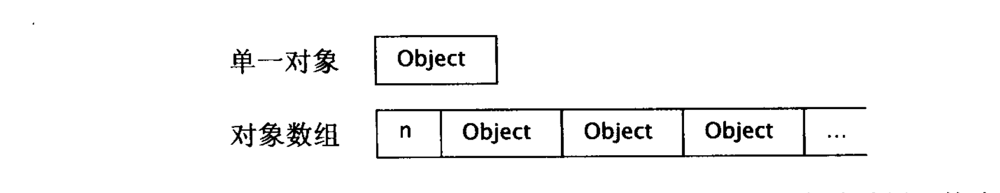

常用 C++ 高效开发范式（一）
还是趁最近疫情 WFH 的闲暇时间，把《Effective C++ 3th》这本书读了一遍。说句实话，整个读书过程的体验并不是很好。首先，这本书最新修订版的出版时间决定了其内容会稍微有些脱节和过时，比如整本书中会出现 C++ 在其 TR1（Technical Report 1）版本中的一些诸如 “std::auto_ptr” 这类现在已经被弃用的语法特性；其次，由于本书的中文版是由台湾的侯捷先生翻译的，因此读起来很多地方还是比较拗口，其带有浓烈台湾语言特色的文字，需要你在读书的过程中再重新整理语句然后加以理解；最后就是原作者的行文方式，个人感觉废话偏多，而且行文连续性很差，对于一些重点并没有使用直观的方式进行展示，而是直接平铺直叙，从上到下叙述，给人的感觉是想到哪写到哪。但无论如何整体来看，还是瑕不掩瑜的。
- （Page：37）使用 explicit 修饰的构造函数可以通过 std::static_cast 进行显式构造。
struct A {
int x = 0;
explicit A(int x) : x(x) {}
};
int main(int argc, char** argv) {
auto a = static_cast<A>(1000);
std::cout << a.x << std::endl;
return 0;
}
让自己习惯 C++
- （Page：44）通常对于内置类型（数字值、迭代器以及函数对象）而言，传值比传指针或引用的效率更高。
- （Page：45）种程度上，使用 constexpr（编译时求值）/ enmu / inline / const 代替宏常量（#define）既可以减少目标代码中出现多份重复的字面量值，还可以达到类似宏替换的效果。不仅如此，使用编译时符号代替宏处理对程序的调试过程也会保留很好的、有意义的上下文环境。
- （Page：47）对于静态成员来说，其类内为声明（若声明为常量则可以赋类内初始值，或者声明为 constexpr 则必须类内初始化以进行编译求值），类外进行定义（非编译期求值，因此不能作为常量）。具有类内初始值的静态成员必须被声明为常量。若静态成员已在类内获得初始值（只对内置类型有效），则对应类外定义不可再赋予其初值。
struct A {
const static int x = 0;
constexpr static int y = 10;
int arr[y] = {}; // 可作为类内常量使用；
};
- （Page：47）“enum hack”：基于 unscoped 枚举类型来模拟宏替换的行为：
- 无法对 enum 及其成员进行取地址操作；
- 不会导致额外的内存分配；
- 符号名在编译期可见，利于后期调试；
class A {
enum configurations { // 使用 “enum hack” 代替宏替换；
TimeoutSeconds = 10,
BufferSize = 1024,
};
public:
int buffer[BufferSize] = {};
};
- （Page：49）对于单纯常量，最好以 const 对象或 enums 替换 #defines；对于形似函数的宏，最好改用 inline 函数替换 #defines；
- （Page：54）bitwise constness：只有在成员函数不更改对象任何成员变量时才可以说是 const（C++ 常量性定义）；logical constness（更建议使用）：一个 const 成员函数可以修改它所处理对象内的某些 bits，但只有在用户侦测不出的情况下才可以（概念上的常量性）。我们可以使用 mutable 关键字来释放某个成员变量对类成员函数的 bitwise constness 约束。
- （Page：54）const 成员函数不应该返回引用，或仅可以返回常量引用。
- （Page：57）在 non-const 成员函数里调用重载的 const 成员函数，可以保证不违反 const 成员函数的语义（因为在 non-const 函数里调用 const 函数是绝对安全的）。
- （Page：59）永远在使用对象之前先将它初始化。
- （Page：60）使用构造函数的成员初始化列表来初始化类成员（在构造函数体之前执行）可以省略调用默认构造函数的过程，进而提高效率。
- （Page：61）类成员变量总是按其声明次序被初始化。
- （Page：65）对于值初始化的几点建议：
- 为内置型对象进行手工初始化，C++ 不保证值的正确性；
- 构造函数最好使用成员初始值列表初始化；
- 使用 local static 对象代替 non-local static 对象（C++保证，函数内的 local static 对象会在函数被调用时初始化）；
struct A { int v = 1; };
A& foo() {
static A stA; // 单例，被自动初始化（默认构造函数）；
return stA;
}
int main(int argc, char** argv) {
auto stA = foo();
++stA.v;
std::cout << stA.v << std::endl;
return 0;
}
构造、析构、赋值运算
- （Page：68）对于内含 const 成员（无法进行赋值运算）以及引用成员的类，编译器不会自动生成拷贝构造与拷贝赋值运算符，而需要自己定义。
- （Page：70）防止成员函数被调用：在 C++11 及以后版本中，可以将其声明为 “delete”，即被删除的函数。
- （Page：71）合成的拷贝构造函数会沿着继承链一直向上调用，直到找到用户显式定义的拷贝构造函数。而派生类中用户显式定义的拷贝构造函数则需要显式调用基类的拷贝构造函数来完成基类对象的拷贝。
- （Page：73）虚析构函数的一个重要作用：当删除一个基类指针所指向的派生类对象时，通过动态调用可以成功析构派生类对象，然后再（自动向上）析构基类对象。
struct A {
virtual ~A() { std::cout << "A" << std::endl; }
};
struct B: A {
~B() { std::cout << "B" << std::endl; }
};
int main(int argc, char** argv) {
A* a = new B;
delete a;
return 0;
}
- （Page：74）虚函数表：由函数指针构成的数组，每一个带有虚函数的类对象都维护一个虚函数表；虚函数指针：类对象内部维护的指针，用来在运行时查找需要真正调用的虚函数；因此，带有虚函数的类对象相对来说占用内存会大 4bytes（32位）或 8bytes（64位）；
- （Page：76）需要用作基类的类应该声明一个虚析构函数，反之则不应该声明。
- （Page：78）若析构函数抛出异常，则应该使用 try…catch 进行捕获，并在特定时期记录日志或使用 std::terminate 结束进程。对于诸如数据库等特殊场景，可以考虑将关键路径的“析构过程”封装成单独的函数留出对外接口让用户来调用以作为保险。
- （Page：84）在类的构造和析构期间不要调用虚函数，因为这类调用从不会下降至派生类（基类在构造时无法调用派生类内定义的虚函数）。可以选择“另派生类将必要信息通过基类构造函数向上传递”的方式来弥补。
- （Page：85）令所有与赋值操作相关的操作符返回一个指向 *this 的引用。
- （Page：89）确保赋值运算符有良好的行为：
- 比较来源对象与目标对象的地址；
- 精心周到的语句顺序；
- 使用 copy-and-swap；
- （Page：89）使用 copy-and-swap（赋值运算符接受一个类对象类型以直接拷贝对象）解决自我赋值和异常安全的问题。将 copying 动作从函数本体移至函数参数构造阶段有可能令编译器生成更高效的代码。
struct A {
int x = 10;
A(int x) : x(x) {}
A& operator=(A rhs) { // copy-and-swap；
using std::swap;
swap(x, rhs.x);
return *this;
}
};
int main(int argc, char** argv) {
A a(10), b(20);
b = a;
b = b;
std::cout << b.x << std::endl;
return 0;
}
- （Page：91）当在派生类中自定义拷贝构造函数与拷贝赋值函数时一定要同时“显式”调用基类的拷贝构造函数与拷贝赋值函数将基类部分的对象赋值。
- （Page：92）不要尝试以某个拷贝函数实现另一个拷贝函数，应该将共同的部分抽成第三个私有方法，并在两个拷贝函数中共用。
资源管理
- （Page：95）RAII（Resource Acquisition Is Initialization）：资源获取即初始化。使用局部对象来管理资源的技术称为资源获取即初始化，局部对象的资源会随着作用域的变化而被创建（构造函数）和自动释放（析构函数）。
- （Page：98）小心 std::shared_ptr 的循环引用：
struct C {
~C() { std::cerr << "destructor\n"; }
std::shared_ptr<C> sp;
};
int main(int argc, char **argv) {
auto p = std::make_shared<C>(), q = std::make_shared<C>();
// 两个动态对象内的智能指针各自指着对方的对象；
p->sp = q;
q->sp = p;
return 0;
}
- （Page：99）对 RAII 对象复制时的两种策略：
- 禁止复制（std::unique_ptr）；
- 对底层资源进行“引用计数”（std::shared_ptr）；
- 同时深复制所有资源；
- 转移资源的所有权（std::move）；
- （Page：105）每一个 RAII 类都应该提供一个取得所管理资源的方法（如
std::shared_ptr<T>::get）；对原始资源的访问可能经由显式转换或隐式转换。一般而言，显式转换更安全，隐式转换更方便。 - （Page：106）数组所用的内存通常还包括对“数组大小”的记录：

- （Page：107）new 和 delete 操作必须保证相同、成对的调用形式：new / delete 或 new[] / delete[]。
- （Page：108）C++ 对函数实参的初始化顺序没有明确要求，因此使用 std::make_shared 可以确保在一次内存分配的事务中完成两个指针（对象本身和控制块）的分配。避免了先 new 后构造带来的，由于其他实参初始化的干扰而产生的资源泄露风险。
设计与声明
- （Page：115）同一个领域的类（类比于 STL 容器类）应该具有统一的对外接口；并且确保接口很容易被正确使用，而不是被误用。
- （Page：118）类设计规范：
- 新类型的对象该如何被创建（new）和销毁（delete）？
- 对象的初始化和赋值该有什么样的区别？
- 新类型的对象如果被以值传递，意味着什么？
- 什么是新类型的“合法值”？
- 新类型需要配合某个继承体系吗？
- 新类型需要什么样的类型转换？
- 什么样的操作符和函数对此新类型是合理的？
- 什么样的标准函数应该不允许被调用？
- 谁能能使用（访问控制符）新类型的成员？
- 什么是新类型的“未声明接口”？
- 新类型由多么“一般化”（类模板）？
- 真的需要新类型吗？
- （Page：121）通常 C++ 编译器会以指针的形式来实现引用。因此对于内置类型，以值传递会比引用传递的效率更高。对于一般的迭代器和函数对象，经过实际测试（Apple clang version 11.0.0 (clang-1100.0.33.17)）发现，将其以引用形式作为函数实参进行传递的效率更高。
- （Page：126）在一般的函数（除去 operator= 等函数）中，不要返回指向本地作用域内变量的引用和指针，不要返回指向本地 static 对象（由于资源是所有对象共有，因此在使用时可能会造成问题）的指针或引用，不要返回指向本地堆对象（易造成资源泄露）的引用。
- （Page：128）将类成员变为 private，并提供需要的 setter 以及 getter 函数，其好处在于对类接口的封装性，对外安全，对内有足够的控制权。对于用户来讲不需要对调用的函数做出更改，但我们可以在函数内部控制需要返回的具体值。
- （Page：130）从封装的角度来看，其实只有两种访问权限：private 和其他；对于类，我们希望将成员变量设置为私有，而通过相关接口（public、protected）来提供给用户及派生类使用这些成员变量的权限。
- （Page：131）越多东西被封装，我们改变那些东西的能力也就越大。
- （Page：134）在某种情况下，可以使用“非成员非友元”函数来替换仅用于功能组合（Utility）的成员函数。这样做可以增加类的封装性、包裹弹性和可扩展性。
- （Page：137）不能只因函数不该成为成员函数，就自动让它成为友元函数。重载的全局运算符函数在某些情况下可不必声明为友元。
struct A {
int v = 0;
A(int v) : v(v) {}
A(const A&& rhs) { v = rhs.v; }
A& operator=(const A&& rhs) {
v = rhs.v;
return *this;
}
};
const A operator*(const A& lhs, const A& rhs) { // 返回 const 对象，防止临时值直接被赋值；
return A(lhs.v * rhs.v);
}
int main(int argc, char** argv) {
A x(10), y(10);
auto rvCopy = std::move(x * y); // 移动赋值（可以对 rvCopy 这个拷贝进行修改）；
const A&& rvRef = std::move(x * y); // 右值引用（无法通过 rvRef 修改临时对象的值，没有构造新对象，不会调用拷贝构造函数）；
return 0;
}
- （Page：137）在初始化一个右值引用变量时，不会调用对象的拷贝构造函数，对于左值引用也是类似。
- （Page：139）Pimpl（Pointer to Implementation）技术：又称为“编译防火墙”，它将类的实现细节从对象表示中移除，放到一个分离的类中，并以一个不透明的（私有）指针（通常为 std::unique_ptr）进行访问。该方法分离了实现体与对外的接口，当实现部分做出更改时，可以最大程度上减少需要编译的依赖。
- （Page：140）通常来说，STL 容器都会提供自己的 swap 函数，并特化相应的 std::swap 以调用自己的 swap 函数。
- （Page：141）函数模板无法进行偏特化，只能进行重载与全特化：
template<typename T> void foo(T t) {}
template<> void foo(int t) {} // 全特化（模板参数隐式推导）；
template<> void foo<double>(double t) {} // 全特化；
void foo(int t) {} // 重载；
template<typename T> void foo(std::vector<T> t) {} // 重载；
// template<typename T> void foo<std::vector<T>>(std::vector<T> t) {} // 偏特化（错误）；
- （Page：144）若标准库默认的 std::swap 效率不足：
- 提供一个公有的 swap 成员函数，且不能抛出异常；
- 在你的类或类模板所在命名空间提供一个非成员函数来调用上述的 swap 成员函数；
- 若正在编写非模板的类，则为类提供特化的 std::swap，并令它调用你的 swap 成员函数；
- 如果你调用 swap，请确定包含一个 using 声明，以便让 std::swap 在你的函数内曝光，并不加修饰地直接调用 swap；
- （Page：144）C++11 之后 std::swap 的语义使用了 move，因此被调用对象需要有编译器合成的或自定义的移动构造函数和移动赋值函数。
namespace NS {
class A {
int v = 0;
public:
int getV() const { return v; }
A(int v) : v(v) {}
void swap(A& o) {
int t = o.v;
o.v = v;
v = t;
}
A(const A&& o) { v = o.v; }
A& operator=(const A&& o) { v = o.v; return *this; }
};
void swap(A& x, A& y) { x.swap(y); }
}
namespace std {
template<> void swap(NS::A& x, NS::A& y) { x.swap(y); }
}
int main(int argc, char** argv) {
NS::A x(10), y(20);
using std::swap;
swap(x, y); // 优先调用 A 所在命名空间内的 swap，若没有定义则调用标准库中全特化的版本；
std::cout << x.getV() << std::endl; // 20；
std::cout << y.getV() << std::endl; // 10；
return 0;
}